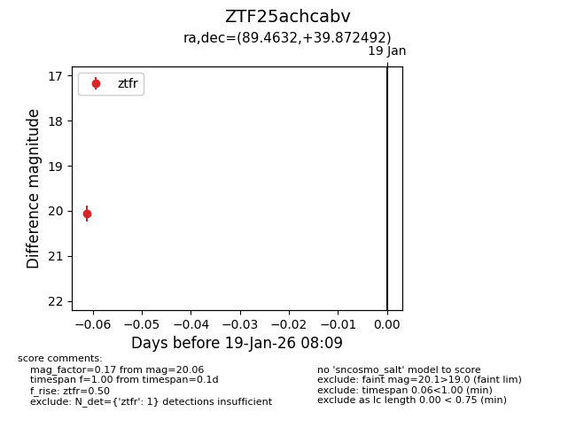
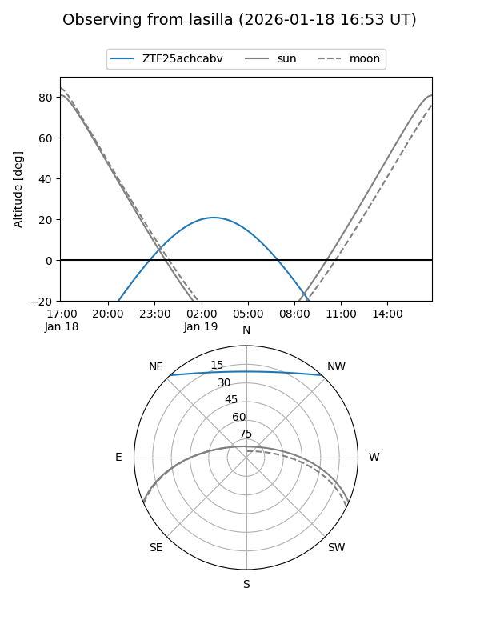
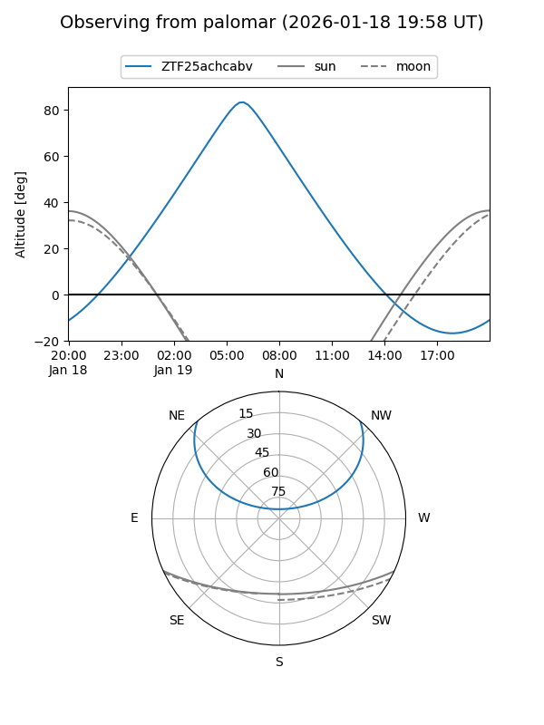

ZTF25achcabv
Target ZTF25achcabv at 2026-01-19 08:10
Aliases and brokers:
FINK: link
Lasair: link
ALeRCE: link
alt names
ZTF25achcabv (ztf,fink_ztf)
Coordinates:
equatorial (ra, dec) = 89.4632,+39.87249
equatorial (HMS+DMS) = 05:57:51.17,+39:52:20.97
galactic (l, b) = (171.8171,+7.70499)
Flags:
Photometry:
last ztfr=20.06
1 ztfr detections
Lightcurve

Visibility


Additional plots